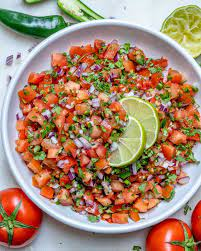

Pico De gallo

Description
This is a simple authentic Pico de gallo recipe you can enjoy with chips or on your plate.Takes no more than 10 minutes to make.
Ingredients
- 10 Tomatoes
- 2 jalapeno chilis
- 2 tbsp Salt
- 2 limes
- 1/2 an onion
- 1 bunch cilantro
Steps
- Chop tomatoes, onion, cilantro and jalapeno. Place in a bowl
- Get the juice of 2 limes and pour it into the bowl.
- Mix it well.
- Add salt to taste.